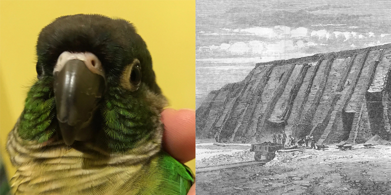

What is Guzcoin?
Guzcoin is the world's first guano-based, nondigital cryptocurrency.
Who Created Guzcoin?
Guzcoin was conceived of by Chip "Chippy" Davenport, bird enthusiast, when, one lonely evening, he observed his green cheek conure (The Guz) drop a turd right into his toaster. His first thought was: how can I monetize this? Hence: Guzcoin
Who Controls the Guzcoin Network?
The Guzcoin network is administered by Chippy Davenport (bird enthusiast), Chad Mouthvich (capitalist), and The Guz.
How Does Guzcoin "work"?
A new Guzcoin is minted when The Guz "blows mud," about every 15 minutes. Guzcoin is "harvested" from the bottom of The Guz's cage when Chippy Davenport, bird enthusiast, gets around to it, usually after another long day of nine to fiving it. Interested investors can contact Chippy (BE) or Chad in the interest of exchanging for individual Guzcoin.
Who Uses Guzcoin?
Innovators, disruptors, Californians, young creatives, anti-vaxxers, bird enthusiasts & c.
What are the Advantages of Guzcoin?
Guzcoin is the world's first guano-based nondigital cryptocurrency. Being nondigital, Guzcoin is immune to hacking or service disruption even from cataclysmic Y2K-style failure. On top of that every Guzcoin comes from a single biologically unique source, which makes forgery virtually impossible. Guzcoins are minted by a 100% natural process meaning there's no need for oppressive government oversight. Plus The Guzcoin is biodegradable and makes a great soil amendment, so your engagement with the machinations of global capitalism will have a low environmental impact!
Why Do People Trust Guzcoin?
Because Guzcoin is the world's first guano-based nondigital cryptocurrency.
Is Guzcoin a Ponzi Scheme?
No, Guzcoin is the world's first guano-based nondigital cryptocurrency.
What is the value of a Guzcoin?
One Guzcoin is represented by a gram of guano, the value of a Guzcoin fluctuates with the market.
Why does Guzcoin have Value?
That's actually a very complicated question. Guzcoin is a form of commodity money, meaning that it is a form of currency that has value (soil amendment) in itself, following in the tradition of many commodity items used as currency throughout history (salt, wampum, maize & c.). That said, like other cryptocurrencies, Guzcoin could be viewed as a form of fiat money, a currency without intrinsic value backed by regulation or agreement. Unlike other forms of currency however, Guzcoin is both commodity (soil amendment) and fiat, valuable for its function, yet deriving additional value through speculation and investment as a currency. Of course, one could make a broader argument about whether or not a commodity "has" intrinsic value and debate how this value is assigned, which is even further complicated by a commodity's status and value in a "post scarcity" society. In an era of globalization and global trade, how can commodity money be fairly and correctly valued in a market that spans vast peaks of wealth and troughs of poverty and need? Could assigning value by fiat be the answer to this ethical quandary?
The point is that yes, Guzcoin has value.
Could Guzcoin Lose all Value?
Being a commodity currency, Guzcoin has intrinsic value as a soil amendment. It is feasible that Guzcoin could lose all value as a fiat currency, at which point the shrewd investor will be left with a stash of rich guano with which to enrich tired soils. What's to complain about?
How Often are Guzcoins minted?
As often as The Guz lets loose her bowels, about every 15 minutes. Given that The Guz is under a year old, and assuming that the average lifespan of a green cheek conure hovers around 25 years, Chippy estimates a ceiling of 876,000 Guzcoins over the next two and a half decades.
Is Guzcoin Vulnerable to a Deflationary Spiral?
I don't know? Maybe?